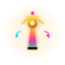
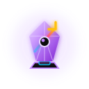
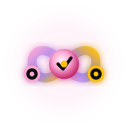
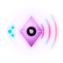
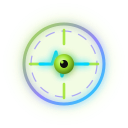

Birthub 360°Brandbook
Sistema Operacional de Inteligência Comercial, impulsionado por IA e Revenue Intelligence.
Este brandbook é a versão 2.0 em rascunho. Cada regra tem um ID estável e uma etiqueta: CONFIRMADA quando vem literalmente da missão (decisões C01 a C09) ou de documento oficial herdado, PROVISÓRIA quando é proposta derivada, ainda sem homologação. Os exemplos de aplicação são protótipos e usam valores ilustrativos.
- Regras
- 121
- Confirmadas
- 45
- Provisórias
- 76

Identidade
Quem a marca é, como o nome se escreve e como ela fala. A grafia do nome ainda não tem decisão definitiva: aparece aqui como provisória, com a pendência à vista.
Nome e grafia PROVISÓRIA
| Grafia | Onde aparece nas fontes | Situação em V2.0 |
|---|---|---|
| Birthub 360° | Missão do usuário de 2026-11-13. | Adotada provisoriamente nos novos textos. |
| Birth Hub 360° e Birth Hub 360º | Brandbook oficial, manuais, src/config/brand.ts e a própria arte do logotipo. O levantamento do Agente 00 conta 27 arquivos. | Legado oficial. Mantida onde já existe, sem reescrita automática. |
| Birthub 360 | Schema e migration (2 arquivos, segundo o Agente 00). | Uso técnico, fora de texto de marca. |
| BirthHub360 | Identificadores e nomes de arquivo. | Uso técnico, não é grafia de texto. |
Arte original preservada, sem alteração (C06). O wordmark desenhado lê BIRTH HUB 360°, em duas palavras. Adotar "Birthub 360°" exigiria arte nova, fora do escopo desta frente.
Escolher entre Birthub 360° (missão) e Birth Hub 360° (fontes oficiais do repositório). Até lá, nenhuma página deve tratar a grafia como definitiva.
Impacto de trocar: arte do logotipo, brand.ts, manuais, metadados e textos legais.
Prova do ponto único de troca
Todo o nome neste documento sai de uma constante em brandbook.js. Troque abaixo e veja o título, o cabeçalho e os textos mudarem juntos.
Simulação local. Nada é gravado.
- BB-ID-01
Posicionamento oficial: Sistema Operacional de Inteligência Comercial, impulsionado por IA e Revenue Intelligence. Usar a frase completa na primeira menção de cada peça.Origem: C01 da missão
CONFIRMADA - BB-ID-02
Depois da primeira menção, a forma curta "Sistema Operacional de Inteligência Comercial" é aceita. "CRM" sozinho não descreve o produto e não deve ser a definição principal.Origem: derivada de C01
PROVISÓRIA - BB-ID-03
Em textos novos, escrever Birthub 360° com o símbolo de grau (U+00B0), nunca o ordinal (U+00BA). Grafia pendente de decisão humana.Origem: P-01
PROVISÓRIA - BB-ID-04
O nome é citado por um único ponto de troca (constante ou token de conteúdo) e nunca digitado solto em componente ou peça. Neste documento:
PROVISÓRIABRAND_NAMEembrandbook.js.Origem: P-01 - BB-ID-05
A arte do logotipo não é redesenhada para acompanhar a grafia. A arte atual lê "BIRTH HUB 360°"; um novo wordmark depende da decisão de P-01.Origem: C06 da missão
CONFIRMADA - BB-ID-06
Não abreviar o nome em texto (por exemplo "BH360"). Em espaço estreito, usar o ícone do logotipo.Origem: proposta deste brandbook
PROVISÓRIA - BB-ID-07
Arquitetura do produto: Hub Central, Workspaces Modulares e Assistentes Globais. Os 11 módulos são P01 a P08 (pilares) e M09 a M11.Origem: C07 da missão
CONFIRMADA
Posicionamento
Sistema Operacional de Inteligência Comercial, impulsionado por IA e Revenue Intelligence.
Sistema Operacional
Não é um módulo nem uma aba: é a camada onde a operação roda. Traduz a arquitetura Hub Central, Workspaces Modulares e Assistentes Globais.
Inteligência Comercial
O domínio. Prospecção, pipeline, cadência, performance e previsibilidade pensados para times comerciais (SDR, closer e gestão).
IA e Revenue Intelligence
O motor. A IA recomenda e executa com evidência visível; Revenue Intelligence é a disciplina que liga dado, decisão e receita.
- BB-ID-08
O ICP é qualquer empresa com área comercial que queira automatizar a operação ponta a ponta. Nenhum texto novo amarra o produto a um vertical específico.Origem: derivada de C01 e do Manual do Produto
PROVISÓRIA - BB-ID-09
A promessa de IA é sempre acompanhada de evidência ou fonte; a marca nunca afirma onisciência. Coerente com BB-ID-15.Origem: proposta deste brandbook
PROVISÓRIA
Propósito, proposta de valor e narrativa
Propósito PROVISÓRIO
Reunir o que está disperso na operação comercial em um único comando: dado que vira decisão, e decisão que vira execução.
Proposta de valor PROVISÓRIA
Três promessas, todas verificáveis no produto: unifica os dados da operação; recomenda com evidência; executa com governança, com aprovação humana nas ações de alto risco.
Propósito e proposta de valor são texto proposto por esta frente, derivado do slogan e da tagline oficiais em src/config/brand.ts ("integrando dados, potencializando decisões e acelerando a execução") e dos princípios do Manual do Produto. Precisam de aprovação editorial.
Narrativa em três tempos PROVISÓRIA
Conectar
Dados dispersos em CRM, planilhas, voz e mensagens entram em um único lugar, com origem rastreável.
Decidir
A inteligência ordena o que importa agora e mostra a evidência por trás de cada recomendação.
Executar
A próxima ação sai do mesmo lugar: cadência, ligação, proposta, com aprovação quando o risco pede.
- BB-ID-10
Propósito: reunir o que está disperso na operação comercial em um único comando. Texto proposto, pendente de aprovação editorial.Origem: derivada de src/config/brand.ts
PROVISÓRIA - BB-ID-11
Proposta de valor em três promessas verificáveis: unifica dados, recomenda com evidência, executa com governança e aprovação humana em ação de alto risco.Origem: Manual do Produto cap. 1 e BIRTHUB360_CONTRATOS_AGENTES.md
PROVISÓRIA - BB-ID-12
Narrativa em três tempos: Conectar, Decidir, Executar. Cada peça de comunicação ocupa um desses tempos e aponta para o seguinte.Origem: derivada de brand.ts (pilares Conexão, Inteligência, Execução)
PROVISÓRIA - BB-ID-13
Não reutilizar afirmações sem lastro do manual de produto legado ("0ms de latência de decisão", "100% WCAG 2.2 AA", "40+ módulos", contra 11 módulos oficiais). Só publicar número com fonte medida.Origem: AGENTS.md §25 (zero mock)
PROVISÓRIA
Personalidade e tom de voz
Diz o número, a fonte e o prazo. Sem adjetivo inflado.
Verbo de ação no começo, uma ideia por frase.
Mostra a evidência antes da conclusão.
Todo problema vem com o próximo passo.
CORRETO
Gerar proposta comercial
ERRADO
Clique aqui
Não foi possível sincronizar com o Bitrix24: o token expirou. Reconecte em Configurações, Integrações.
Ocorreu um erro inesperado. Tente mais tarde.
Probabilidade de fechamento em 78%, com base em 12 reuniões no mesmo segmento.
Eu acho que este cliente vai fechar porque é muito qualificado.
Exemplos de redação herdados do Manual de Identidade do Produto (cap. 4). O 78% e as 12 reuniões são texto de exemplo, não dado real.
- BB-ID-14
Personalidade: precisa, direta, analítica e resolutiva, com a postura de um consultor sênior de alto impacto.Origem: Manual de Identidade do Produto, cap. 4
CONFIRMADA - BB-ID-15
A IA fala em hipótese apoiada em evidência concreta, nunca como entidade onipotente.Origem: Manual de Identidade do Produto, cap. 4
CONFIRMADA - BB-ID-16
Botões e ações usam verbo direto que anuncia o resultado ("Gerar proposta comercial", "Sincronizar agora"). Proibidos "Clique aqui", "Submeter" e "OK".Origem: Manual de Identidade do Produto, cap. 4
CONFIRMADA - BB-ID-17
Mensagens de erro dizem a causa raiz e oferecem o próximo passo de recuperação.Origem: Manual de Identidade do Produto, cap. 4
CONFIRMADA - BB-ID-18
A personalidade tem duas réguas: cinematográfica na experiência comercial (landing, campanhas) e discreta e rápida na operação (plataforma).Origem: C08 da missão
PROVISÓRIA
Logotipo
Os três SVGs mestres entram sem nenhuma alteração. Tudo o que está desenhado em volta deles (medidas, proteção, fundos) é diagrama de apoio, nunca redesenho.
Versões

Arquivos: assets/logos/birthhub360-simbolo.svg, -icone.svg, -logo-horizontal.svg. Cópias idênticas (verificadas com cmp) dos mestres em identidade-visual/birthhub360/logos/.
- BB-LOGO-01
O logotipo original não é redesenhado, recolorido, vetorizado de novo nem "melhorado". Usar sempre os SVGs mestres copiados em
CONFIRMADAassets/logos/.Origem: C06 da missão - BB-LOGO-02
Três versões oficiais: símbolo (emblema completo, 96 px ou mais), ícone (32 a 96 px; favicon e avatar) e horizontal (emblema mais logotipo, assinatura institucional).Origem: src/config/brand.ts
CONFIRMADA - BB-LOGO-03
Os SVGs mestres têm cores históricas (incluindo #3B82F6 no anel e serifa no "B" e no wordmark) que diferem dos tokens neon atuais. Foram preservados por determinação do usuário e não são corrigidos nesta frente.Origem: identidade-visual/README.md
CONFIRMADA - BB-LOGO-04
Cada imagem de logotipo leva texto alternativo com o nome e a versão. Em um cabeçalho que já traz o nome em texto, o ícone é decorativo (alt vazio).Origem: proposta deste brandbook
PROVISÓRIA
Proporções
ABCD
| Marca | Elemento (viewBox 256) | Diâmetro | % do lado |
|---|---|---|---|
| A | Anel de graduação (traço r 118,12 e espessura 11,77) | 248 | 96,9% |
| B | Órbita, borda externa (r 90) | 180 | 70,3% |
| C | Disco central (r 74), borda interna da órbita | 148 | 57,8% |
| D | Aro dourado interno (r 61,5, traço 5) | 123 | 48,0% |
| - | Eixo horizontal: largura 128, altura 3 | 128 | 50,0% |
Medidas lidas no código do SVG mestre (símbolo). A caixa visível mede 248 de 256 unidades (bounding box 4 a 252, medida por rasterização). São fatos do arquivo, não instrução de redesenho.
- BB-LOGO-05
Geometria do símbolo (viewBox 256): anel de graduação com diâmetro 248, órbita 180, disco central 148, aro dourado 123 e eixo de 128 de largura. A órbita tem 16 de espessura em 6 arcos.Origem: medido no SVG mestre
CONFIRMADA - BB-LOGO-06
O emblema não sofre distorção de proporção, rotação arbitrária dos anéis nem alteração dos gradientes neon que formam a assinatura óptica.Origem: BRANDBOOK-OFICIAL-BIRTH-HUB-360.html, cap. 4
CONFIRMADA - BB-LOGO-07
O ícone é o recorte justo da órbita: viewBox 38 38 180 180, sem margem interna. O horizontal mede 946 por 256, com o símbolo ocupando a altura total.Origem: medido no SVG mestre
CONFIRMADA
Área de proteção PROVISÓRIA
XSímbolo: X = ¼ do diâmetro visível (62 unidades)
XHorizontal: X ≈ 62 unidades (29 px nesta escala). Ícone: X = ¼ do lado.
- BB-LOGO-08
Área de proteção X = ¼ do diâmetro visível do símbolo (62 de 248 unidades) em todo o contorno. Nenhum texto, borda, imagem ou outro elemento entra nela.Origem: proposta derivada da geometria medida
PROVISÓRIA - BB-LOGO-09
No ícone, que não tem anel de graduação, X = ¼ do lado do recorte (45 de 180 unidades). A proteção é medida a partir da borda visível, não da borda do arquivo.Origem: proposta deste brandbook
PROVISÓRIA
Tamanhos mínimos
- BB-LOGO-10
Símbolo completo: 96 px ou mais. Ícone: 32 a 96 px. Abaixo de 96 px o anel de graduação do símbolo deixa de ser legível e deve ser trocado pelo ícone.Origem: src/config/brand.ts
CONFIRMADA - BB-LOGO-11
Logotipo horizontal: altura mínima de 32 px em tela e 12 mm em impressão. Favicon e avatar pequeno usam o ícone, com 24 px como piso. Estes pisos precisam de teste em dispositivo real.Origem: proposta deste brandbook, não validada em dispositivo
PROVISÓRIA
Fundos permitidos e proibidos
Contraste das cores do wordmark horizontal contra #F4F7FB: Azul Neon 1,65:1, Dourado 1,52:1, Rosa Neon 3,20:1. Os três ficam abaixo de 3:1 em quase todo o traço.
- BB-LOGO-12
Fundos permitidos: Dark #0D0D0D, superfícies #14141A, #1C1C24 e #252530, e Light #F4F7FB para símbolo e ícone (o disco central escuro garante o contraste).Origem: C02 e inspeção visual
PROVISÓRIA - BB-LOGO-13
O logotipo horizontal sobre Light exige placa escura #0D0D0D com área de proteção respeitada, porque o wordmark em gradiente neon fica abaixo de 3:1 sobre #F4F7FB.Origem: contraste medido (ver tabela abaixo do grid)
PROVISÓRIA - BB-LOGO-14
Proibido sobre fundo neon sólido, gradiente, imagem ocupada ou cinza médio. Se o fundo não puder ser controlado, usar a placa escura.Origem: proposta deste brandbook
PROVISÓRIA
Restrições de uso
- BB-LOGO-15
Proibido distorcer proporção, girar o emblema ou os anéis, e alterar os gradientes neon do emblema.Origem: BRANDBOOK-OFICIAL-BIRTH-HUB-360.html, cap. 4
CONFIRMADA - BB-LOGO-16
Também proibido: recolorir ou fazer versão monocromática improvisada, aplicar sombra, contorno ou transparência, cortar o emblema, e montar um logotipo horizontal novo com outra fonte. Versão monocromática oficial depende de arte nova aprovada.Origem: proposta deste brandbook
PROVISÓRIA
Paleta Neon
Quatro cores de luz sobre dois canvas. O neon puro é preenchimento e sinalização; texto sobre Light usa variantes derivadas, medidas uma a uma.
Cores oficiais (C02)
Tecnologia, confiança, foco analítico. Cor de interação primária: ações, links, foco, bordas ativas.
Energia, atitude, conversão. Destaque comercial, alertas de atenção, inteligência de mercado.
Receita, previsibilidade, governança. Métricas de receita, decisões estratégicas, selo de rascunho.
Inteligência artificial. Agentes, copiloto e automações autônomas.
Canvas escuro. Fundo principal. Não é o preto puro #000.
Canvas claro. Fundo principal do tema claro. Não é o branco puro #FFF.
- BB-COR-01
Paleta oficial: Azul Neon #00D4FF, Rosa Neon #FF2D9B, Dourado #FFC107, Íris #8B7DFF, Dark #0D0D0D e Light #F4F7FB. Nenhuma outra cor de marca é criada nesta versão.Origem: C02 da missão
CONFIRMADA - BB-COR-02
Papéis: Azul Neon é tecnologia e interação; Rosa Neon é energia e conversão; Dourado é receita e previsibilidade; Íris é inteligência artificial.Origem: C02 e Manual de Identidade Visual
CONFIRMADA - BB-COR-03
Os neons não são neutralizados nem trocados por pastéis. Dark e Light não são preto nem branco puros.Origem: C02 e C04
CONFIRMADA - BB-COR-04
Light oficial V2.0 é #F4F7FB (missão). O "Neon White" #F8F9FF dos tokens atuais é a cor de texto sobre Dark e não é usado como canvas. Conflito registrado.Origem: P-05
PROVISÓRIA
Contraste WCAG medido
Razão de contraste WCAG 2.2 calculada sobre os hexadecimais (luminância relativa). Texto normal exige 4,5:1; texto grande e componentes de interface, 3:1. Células tracejadas ficam abaixo de 3:1.
Neon e tinta sobre os fundos
| Cor (texto) | Dark #0D0D0D | Superfície #14141A | Superfície 3 #252530 | Light #F4F7FB |
|---|---|---|---|---|
| Azul Neon #00D4FF | Aa10,98:1AAA | Aa10,36:1AAA | Aa8,56:1AAA | Aa1,65:1falha |
| Rosa Neon #FF2D9B | Aa5,65:1AA | Aa5,33:1AA | Aa4,40:1AA grande | Aa3,20:1AA grande |
| Dourado #FFC107 | Aa11,92:1AAA | Aa11,25:1AAA | Aa9,30:1AAA | Aa1,52:1falha |
| Íris #8B7DFF | Aa5,99:1AA | Aa5,66:1AA | Aa4,67:1AA | Aa3,02:1AA grande |
| Tinta Dark #E8EEFF | Aa16,76:1AAA | Aa15,82:1AAA | Aa13,06:1AAA | Aa1,08:1falha |
| Tinta suave #9EADC8 | Aa8,58:1AAA | Aa8,09:1AAA | Aa6,69:1AA | Aa2,11:1falha |
Variantes de texto para Light (derivadas, PROVISÓRIAS)
| Variante (texto) | Light #F4F7FB | Superfície #FBFCFE | Superfície 2 #EEF2F8 | Superfície 3 #E3E9F2 |
|---|---|---|---|---|
| Azul #006C8C | Aa5,55:1AA | Aa5,81:1AA | Aa5,30:1AA | Aa4,88:1AA |
| Rosa #C4105F | Aa5,45:1AA | Aa5,70:1AA | Aa5,21:1AA | Aa4,80:1AA |
| Dourado #7A5800 | Aa6,06:1AA | Aa6,35:1AA | Aa5,80:1AA | Aa5,34:1AA |
| Íris #5B4BD6 | Aa5,71:1AA | Aa5,98:1AA | Aa5,46:1AA | Aa5,03:1AA |
| Tinta #0F1A2E | Aa16,19:1AAA | Aa16,94:1AAA | Aa15,48:1AAA | Aa14,25:1AAA |
| Tinta suave #46546B | Aa7,13:1AAA | Aa7,46:1AAA | Aa6,82:1AA | Aa6,28:1AA |
Neon como preenchimento: qual texto vai por cima
| Preenchimento | Texto #0D0D0D (on-neon) | Texto #FFFFFF (proibido) |
|---|---|---|
| Azul Neon | Aa10,98:1AAA | Aa1,77:1falha |
| Rosa Neon | Aa5,65:1AA | Aa3,44:1AA grande |
| Dourado | Aa11,92:1AAA | Aa1,63:1falha |
| Íris | Aa5,99:1AA | Aa3,24:1AA grande |
Os tokens oficiais atuais definem --palette-cyan #0284C7, --palette-pink #D91B7C e --palette-gold #D97706 para Light. Sobre #F4F7FB medem 3,81:1, 4,44:1 e 2,96:1: nenhum passa 4,5:1 como texto normal. É por isso que P-02 propõe variantes mais escuras.
- BB-COR-05
Sobre Dark, Azul Neon, Dourado e Íris passam AA como texto normal em todas as superfícies escuras. Rosa Neon passa em Dark e #14141A, mas cai a 4,40:1 em #252530 (só texto grande ou ícone).Origem: C02 (medição WCAG deste brandbook)
CONFIRMADA - BB-COR-06
Neon puro como texto sobre Light não passa: 1,65:1 (azul), 3,20:1 (rosa), 1,52:1 (dourado) e 3,02:1 (íris). Sobre Light, neon só aparece como preenchimento, nunca como texto.Origem: C02 (medição WCAG deste brandbook)
CONFIRMADA - BB-COR-07
Texto colorido em Light usa as variantes derivadas #006C8C, #C4105F, #7A5800 e #5B4BD6, todas com 4,80:1 ou mais nas quatro superfícies claras medidas. Valores derivados, não oficiais.Origem: P-02
PROVISÓRIA - BB-COR-08
Texto sobre preenchimento neon usa #0D0D0D (on-neon), com 5,65:1 ou mais. Texto branco sobre neon é proibido (por exemplo 1,77:1 sobre Azul Neon e 3,44:1 sobre Rosa).Origem: C04 e CLAUDE.md
CONFIRMADA - BB-COR-09
Componentes de interface e anéis de foco exigem 3:1 contra o fundo adjacente; a cor nunca é o único sinal de estado (sempre acompanhada de texto, ícone ou forma).Origem: WCAG 2.2
PROVISÓRIA
Hierarquia cromática e distribuição PROVISÓRIA
- BB-COR-10
Distribuição de área por tela: 60% canvas e superfícies, 25% tinta e linhas, 10% Azul Neon de interação e 5% acentos (Rosa, Dourado, Íris). A proporção é guia de revisão, não métrica automática.Origem: exemplo da missão (60/25/10/5)
PROVISÓRIA - BB-COR-11
Num mesmo viewport, um acento secundário domina por contexto (Rosa em conversão, Dourado em receita, Íris em IA). Não misturar os quatro neons no mesmo componente.Origem: proposta deste brandbook
PROVISÓRIA - BB-COR-12
Ação primária é Azul Neon sólido com texto on-neon. Rosa Neon sólido é reservado ao ponto de conversão de maior valor da tela (um por tela).Origem: proposta deste brandbook
PROVISÓRIA
Superfícies e profundidade
A profundidade vem da troca de superfície e de sombras com deslocamento e desfoque. Sobre Dark, o limite é uma linha fina rgba(158,173,200,.18); sobre Light, a sombra faz o trabalho.
Superfícies escuras herdadas de identidade-visual/.../tokens. As superfícies Light são derivadas (P-04).
- BB-COR-13
Escada de superfícies Dark: canvas #0D0D0D, superfície #14141A, superfície 2 #1C1C24, superfície 3 #252530. Cada degrau acima é uma camada mais alta.Origem: tokens oficiais e P-04
CONFIRMADA - BB-COR-14
Escada Light derivada: canvas #F4F7FB, superfície #FBFCFE, superfície 2 #EEF2F8, superfície 3 #E3E9F2.Origem: P-04 e proposta deste brandbook
PROVISÓRIA - BB-COR-15
Sombras de elevação têm deslocamento vertical e desfoque (por exemplo
PROVISÓRIA0 12px 28px -12px); nunca halo colorido de deslocamento zero para dar profundidade. Cartão dentro de cartão é proibido.Origem: proposta deste brandbook - BB-COR-16
Raios: controle 12 px, cartão 16 px, modal 20 px, pílula 9999 px.Origem: tokens oficiais de raio
PROVISÓRIA
Iluminação e glow
Halo oficial: 0 0 24px rgba(cor, .45) (tokens --glow-*). Este é o único lugar do documento onde ele aparece.
- BB-COR-17
Halo de marca:
CONFIRMADA0 0 24pxcom a cor a 45% de opacidade. Personagens usam0 0 32pxa 35 a 40%.Origem: tokens oficiais --glow-blue, --glow-pink, --glow-gold - BB-COR-18
Glow sinaliza estado (foco, ativo, em processamento) e nunca decora. No máximo um elemento com halo por região da tela; em repouso, sem halo.Origem: proposta deste brandbook
PROVISÓRIA - BB-COR-19
Em Light não há halo: o foco usa anel sólido de 2 px e a profundidade vem de sombra com deslocamento.Origem: proposta deste brandbook
PROVISÓRIA
Gradientes
Órbita 360°: conic-gradient(from 0deg, #FFC107, #FF2D9B, #00D4FF, #FFC107). Único gradiente multicolor da marca.
Os manuais legados também citam gradiente de título (azul, rosa, dourado, com texto recortado) e de CTA (rosa para azul). A V2.0 não os adota. Ver divergências D-03 e D-04.
- BB-COR-20
A órbita 360° é
CONFIRMADAconic-gradient(from 0deg, #FFC107, #FF2D9B, #00D4FF, #FFC107).Origem: tokens oficiais --grad-orbit - BB-COR-21
A órbita aparece só em anéis, bordas finas, indicadores e grafismos. Nunca como fundo com texto por cima, nunca em texto (
PROVISÓRIAbackground-clip: texté proibido) e no máximo uma por composição.Origem: proposta deste brandbook e C04 - BB-COR-22
Botão primário é cor sólida. O gradiente de CTA do manual legado (rosa para azul) não é adotado em V2.0.Origem: proposta deste brandbook
PROVISÓRIA
Estados e semântica
Meta batida, sincronização concluída.
Perda, falha de API, ação urgente.
Andamento, dica, metadado.
Dado desatualizado, pendência.
Sucesso #22C55E, crítico #EF4444, atenção (dourado) #FFC107 e informativo #3B82F6. O Design System está sendo alinhado a estes valores; no momento da leitura, tokens.css ainda declara #34D399, #FF9A3D e #FF5C6C.
Contraste sobre #0D0D0D: sucesso 8,53:1, crítico 5,16:1, informativo 5,28:1. Sobre #F4F7FB os originais caem a 2,12:1, 3,50:1 e 3,42:1; as variantes Light medem 4,67:1, 6,02:1 e 6,24:1.
- BB-COR-23
Cores funcionais: sucesso #22C55E, crítico #EF4444, atenção (warning) em Dourado #FFC107, informativo #3B82F6 e inteligência artificial em Íris. O Design System está sendo alinhado a estes valores.Origem: Manual de Identidade Visual, cap. 2
CONFIRMADA - BB-COR-24
Em Light, as cores funcionais usam #15803D, #B91C1C e #1D4ED8 (todas acima de 4,5:1 sobre #F4F7FB); os valores originais não passam.Origem: contraste medido, derivação deste brandbook
PROVISÓRIA - BB-COR-25
Todo componente interativo define padrão, hover, foco visível, ativo, desabilitado, carregando e erro. Todo painel de dados define loading, empty, error e stale (AGENTS.md §25).Origem: proposta deste brandbook
PROVISÓRIA
Dark e Light
| Token | Dark | Light | Status |
|---|---|---|---|
| --bg | #0D0D0D | #F4F7FB | Missão (C02) |
| --surface | #14141A | #FBFCFE | Dark herdada; Light derivada |
| --surface-2 / -3 | #1C1C24 / #252530 | #EEF2F8 / #E3E9F2 | Dark herdada; Light derivada |
| --ink | #E8EEFF | #0F1A2E | Derivada (P-03) |
| --ink-muted | #9EADC8 | #46546B | Dark herdada; Light derivada |
| --c-blue | #00D4FF | #006C8C | Light derivada (P-02) |
| --c-pink | #FF2D9B | #C4105F | Light derivada (P-02) |
| --c-gold | #FFC107 | #7A5800 | Light derivada (P-02) |
| --c-iris | #8B7DFF | #5B4BD6 | Light derivada (P-02) |
| --on-neon | #0D0D0D | #0D0D0D | Missão (texto sobre neon) |
Use o botão Dark/Light no topo para ver este documento inteiro nos dois temas. Mapa idêntico ao de shared/core.css.
- BB-COR-26
Dois temas oficiais, Dark (#0D0D0D) e Light (#F4F7FB), com alternância manual e persistência da escolha. O tema nunca depende só de
CONFIRMADAprefers-color-scheme.Origem: C02 e C04 - BB-COR-27
As variantes Light (superfícies, tinta e cores de texto) e a tinta #E8EEFF são derivadas, medidas neste documento e aguardam homologação.Origem: P-02, P-03 e P-04
PROVISÓRIA - BB-COR-28
Nenhum título ou subtítulo usa #FFFFFF ou #000000. Texto usa a tinta do tema ou a cor de acento do tema (ver Tipografia).Origem: C04
CONFIRMADA
Tipografia
Três famílias, três trabalhos: Sora fala, Inter opera, IBM Plex Mono mede. Todas hospedadas em public/fonts, sem requisição a CDN.
Famílias e usos
ABCDEFGHIJKLMNOPQRSTUVWXYZ abcdefghijklmnopqrstuvwxyz 0123456789 ° % R$
Sora, exibição
Display e títulos H1 a H3, nomes de personagem, números de destaque. Pesos 600, 700 e 800; tracking -0,02em.
ABCDEFGHIJKLMNOPQRSTUVWXYZ abcdefghijklmnopqrstuvwxyz 0123456789 ° % R$
Inter, interface
Menus, formulários, tabelas, botões e texto corrido. Pesos 400, 500 e 600; recursos cv05, cv11, ss01 e tracking -0,012em.
ABCDEFGHIJKLMNOPQRSTUVWXYZ abcdefghijklmnopqrstuvwxyz 0123456789 {}[]()
IBM Plex Mono, dados
Métricas, contadores, IDs, código, comandos ("Ei Orbit") e telemetria. Pesos 400, 500 e 600. Os números acima são formatação de exemplo.
- BB-TIPO-01
Trinca tipográfica: Sora (display), Inter (interface) e IBM Plex Mono (dados e código). Nenhuma outra família em peça nova.Origem: C03 da missão
CONFIRMADA - BB-TIPO-02
Proibidas em layout novo as famílias legadas Bodoni Moda, Cabin, JetBrains Mono e Playfair Display. O serifado do "B" e do wordmark do logotipo é arte preservada, não tipografia de layout.Origem: BRANDBOOK-OFICIAL-BIRTH-HUB-360.html, cap. 4
CONFIRMADA - BB-TIPO-03
Inter usa
CONFIRMADAfont-feature-settings: "cv05","cv11","ss01"e tracking -0,012em (o "toque arredondado"). Sora usa tracking -0,02em.Origem: Manual de Identidade Visual, cap. 3 - BB-TIPO-04
Plex Mono é reservada a métricas, contadores, badges técnicos, IDs, logs e código; números tabulares alinham colunas. Nunca em texto corrido nem como fantasia de "tecnológico".Origem: Manual de Identidade Visual, cap. 3
CONFIRMADA - BB-TIPO-05
Sora vale para H1 a H6 (Manual de Identidade Visual). O
PROVISÓRIA.claude/CLAUDE.mddo repositório usa Inter em H4 a H6; a divergência aguarda decisão.Origem: divergência D-02
Escalas e pesos: duas escalas, dois níveis PROVISÓRIA
Duas escalas ligadas aos níveis de intensidade (C08). A escala abaixo é a de Experiência Comercial e Leitura (este documento, landing, campanhas); a escala Operacional (plataforma) está na tabela seguinte.
72/76 · -0,02emComando 360°
48/52Pipeline sob controle
36/40Previsibilidade de receita
24/30Plano diário priorizado
18/24Cadência multicanal
16/27 · medida 65 a 75chO sistema ordena o que importa agora e mostra a evidência por trás de cada recomendação, para que o time decida em segundos.
13/19Atualizado há 4 minutos · fonte: CRM
14/20 · tabular00.000,00 · ID 0000-0000 · 000 ms
Escala Operacional (plataforma), valores do Design System PROVISÓRIA
| Papel | Tamanho / entrelinha | Peso | Uso |
|---|---|---|---|
| display-xl | 48 / 1,08 | 700 | Hero institucional (comercial) |
| display | 36 / 1,12 | 700 | Destaque de tela |
| h1 · h2 · h3 | 30 / 1,2 · 24 / 1,25 · 20 / 1,3 | 700 · 600 · 600 | Título de tela, seção, bloco |
| h4 · h5 · h6 | 18 · 16 · 14 | 600 | Subtítulos densos |
| body | 14 / 1,5 | 400 | Texto, tabelas, campos |
| body-sm · label | 13 | 400 · 500 | Apoio, rótulos |
| caption | 12 / 1,4 | 500 | Legenda |
| data · data-lg | 14 · 24 | 500 · 600 | Plex Mono tabular |
Os textos de amostra são redação ilustrativa; "4 minutos" e "000" não são dados reais.
- BB-TIPO-06
Escala de Experiência Comercial e Leitura: display 72, H1 48, H2 36, H3 24, H4 18, corpo 16, apoio 13 e dados 14 (px). Display nunca passa de 6rem; cada degrau difere do vizinho em pelo menos 1,25x ou em peso.Origem: proposta deste brandbook, ligada a C08
PROVISÓRIA - BB-TIPO-07
Escala Comercial e Leitura: corpo de 16 px no mínimo, entrelinha 1,6 a 1,7 e medida de 65 a 75 caracteres. Em fundo escuro, entrelinha um pouco maior.Origem: proposta deste brandbook
PROVISÓRIA - BB-TIPO-15
Escala de Experiência Operacional e Plataforma, a do Design System: display-xl 48, display 36, h1 30, h2 24, h3 20, h4 18, h5 16, h6 14, corpo 14 (entrelinha 1,5), body-sm 13, caption 12, label 13, dados 14 e data-lg 24 (px). Display-xl 48 é de uso comercial; na plataforma o título dominante é h1 30. Marcada PROVISÓRIA: o DS também a marca como provisória.Origem: 03-design-system/tokens/tokens.json (lido em 2026-11-13)
PROVISÓRIA - BB-TIPO-16
Cada superfície usa uma escala só, escolhida pelo nível: Comercial e Leitura usa a de BB-TIPO-06; Operacional e Plataforma usa a de BB-TIPO-15. Famílias, pesos e tracking (BB-TIPO-01 a 04 e 09) valem para as duas.Origem: C08 da missão
PROVISÓRIA - BB-TIPO-08
Títulos usam
PROVISÓRIAtext-wrap: balancee texto corridotext-wrap: pretty. Tracking nunca abaixo de -0,04em.Origem: proposta deste brandbook - BB-TIPO-09
Pesos oficiais: Sora 400, 600, 700 e 800; Inter 400, 500, 600 e 700; Plex Mono 400, 500 e 600.Origem: Manual de Identidade Visual, cap. 3
CONFIRMADA
Cor dos títulos
Previsibilidade
Tinta derivada sobre Dark.
CORRETO · #E8EEFF sobre #0D0D0DPrevisibilidade
Neon de acento sobre Dark.
CORRETO · #00D4FF sobre #0D0D0DPrevisibilidade
Tinta derivada sobre Light.
CORRETO · #0F1A2E sobre #F4F7FBPrevisibilidade
Variante de acento sobre Light.
CORRETO · #C4105F sobre #F4F7FBPrevisibilidade
Exemplo proibido: branco puro.
PROIBIDO · #FFFFFF (C04)Previsibilidade
Exemplo proibido: preto puro.
PROIBIDO · #000000 (C04)- BB-TIPO-10
Títulos e subtítulos nunca são #FFFFFF nem #000000. Em Dark, tinta #E8EEFF ou cor de acento; em Light, tinta #0F1A2E ou variante de acento.Origem: C04 da missão
CONFIRMADA - BB-TIPO-11
Ênfase em texto vem de peso, tamanho e cor sólida. Gradiente em texto (
CONFIRMADAbackground-clip: text) é proibido em qualquer contexto.Origem: C04 e CLAUDE.md - BB-TIPO-12
Um título tem uma cor só. A cor de acento do capítulo ou módulo pode colorir o título inteiro; palavras soltas coloridas dentro de frase são exceção rara.Origem: proposta deste brandbook
PROVISÓRIA
Hierarquia em texto corrido
A lista abre pelo contato com maior chance de resposta hoje e mostra por quê. Cada linha traz a última interação e a ação sugerida.
O ordenamento combina estágio, recência e sinais de engajamento. Nos campos de dados, usamos mono: score 00 · ciclo 00 d.
Texto de exemplo; valores e regras de cálculo são ilustrativos.
- BB-TIPO-13
Uma tela tem um único título dominante. Papéis (título, corpo, rótulo, dado) devem ser distinguíveis sem ler o texto, por tamanho, peso ou família.Origem: proposta deste brandbook
PROVISÓRIA - BB-TIPO-14
Números de métrica usam Plex Mono tabular; unidade e rótulo em Inter menor. Número sem fonte medida não é publicado (zero mock).Origem: proposta deste brandbook
PROVISÓRIA
Linguagem visual
Neon Editorial Cinematic é a referência criativa desta versão: luz funcional sobre canvas escuro, composição de revista e profundidade controlada.
Neon Editorial Cinematic REFERÊNCIA CRIATIVA
Neon
A cor é luz com função: marca estado, foco e prioridade sobre um canvas quase preto.
Editorial
Grid assimétrico, tipografia em escala grande, legendas e margens que organizam a leitura.
Cinematic
Enquadramento, camadas e ritmo. O movimento cinematográfico existe só na experiência comercial.
Na V2.0 o nome "N1 Final Candidate" constava como não localizado, porque a busca cobriu só este repositório. O N1 existe em github.com/MaarkssDN/Land-page (mission-06/n1-final/, commit 0d08b31) e foi analisado: veja 08 — Referência N1. Ele é a referência da Experiência Comercial (Persuade) e não define regras para os workspaces. A página publicada (GitHub Pages) não pôde ser acessada neste ambiente (proxy 403); a análise usa o código do repositório.
- BB-LING-01
Neon Editorial Cinematic é referência criativa, não definição automática de regras. Regras só existem quando escritas e etiquetadas neste documento.Origem: C05 da missão
CONFIRMADA - BB-LING-02
O N1 Final Candidate (repositório externo MaarkssDN/Land-page, commit 0d08b31) pode ser citado como referência criativa da Experiência Comercial, nunca como regra homologada nem como precedente para workspaces operacionais. Detalhes e mapeamento em 08-referencia-n1.Origem: análise do N1 (08-referencia-n1), errata V2.1
PROVISÓRIA - BB-LING-03
Leitura da direção: neon como luz funcional (cor com função), editorial como estrutura (grid assimétrico, escala tipográfica, legendas) e cinematic como profundidade e ritmo, limitado à camada comercial.Origem: proposta deste brandbook
PROVISÓRIA
Grafismos 360°
Bezel de graduação
Anel de marcas, referência de instrumento. Mede e enquadra.
Órbita
Anel de gradiente para indicador de estado ou progresso.
Retícula e eixo
Cruz de mira para foco e alinhamento, eco do eixo do símbolo.
Arcos concêntricos
Alcance e camadas. Separador de seção ou fundo de gráfico.
Nós e conexões
Entidades ligadas: conta, contato, negócio. Sempre com rótulo.
- BB-LING-04
Cinco grafismos 360° autorizados: bezel de graduação, órbita, retícula e eixo, arcos concêntricos, nós e conexões. Todos desenhados em CSS ou SVG, em traço fino, sem redesenhar o logotipo.Origem: proposta deste brandbook
PROVISÓRIA - BB-LING-05
Grafismo ocupa a moldura e a margem; nunca fica atrás de texto corrido. Cada grafismo carrega informação (medida, estado, relação) ou sai.Origem: proposta deste brandbook
PROVISÓRIA - BB-LING-06
Proibido: malha ou grade decorativa de fundo, nuvem de brilho radial e ilustração montada com formas soltas em tamanho de herói.Origem: proposta deste brandbook
PROVISÓRIA
Composição editorial
Grid de 12 colunas: 7 de conteúdo dominante, 1 de respiro e 4 de apoio (legenda, dado, ação).
- BB-LING-07
Hero centralizado e três cartões iguais só para preencher espaço não são o padrão. Uma exceção exige justificativa escrita por objetivo, fluxo ou volume real de informação.Origem: .claude/CLAUDE.md, regras 2 e 4
CONFIRMADA - BB-LING-08
Cada composição tem um elemento dominante identificável, grid assimétrico e uma legenda em Plex Mono que explica o que o olho vê.Origem: proposta deste brandbook
PROVISÓRIA - BB-LING-09
Na plataforma (nível operacional), densidade alta e estrutura previsível vencem a expressão; na landing e em campanhas (nível comercial), escala e ousadia vencem.Origem: proposta deste brandbook
PROVISÓRIA
Profundidade
Quatro camadas: canvas, superfície, conteúdo e sinal. Cada camada acima tem fundo um degrau mais claro e sombra de elevação. A luz neon só mora na camada de sinal.
- BB-LING-10
Quatro camadas de profundidade: canvas, superfície, conteúdo, sinal. Glow e cor neon intensa pertencem à camada de sinal.Origem: proposta deste brandbook
PROVISÓRIA - BB-LING-11
Desfoque e vidro (
PROVISÓRIAbackdrop-filter) só com função: cabeçalho fixo sobre conteúdo rolando, camada flutuante. Nunca como enfeite em todo cartão.Origem: CLAUDE.md regra 5
Iconografia e ilustração PROVISÓRIA
Conjunto de apoio desenhado para este brandbook (grade 24, traço 1,75, pontas arredondadas). A biblioteca definitiva é da frente 05-biblioteca.
- BB-LING-12
Ícones são SVG desenhado, em grade 24, traço único de 1,75 e pontas arredondadas, na cor de acento do contexto. Nunca emoji nem glifo Unicode no lugar de ícone.Origem: proposta deste brandbook
PROVISÓRIA - BB-LING-13
Ícone acompanha sempre um rótulo em texto, a menos que seja ação universal com nome acessível. Ícone não fica dentro de quadrado arredondado acima de título.Origem: proposta deste brandbook
PROVISÓRIA
Imagens
Permitido
- Telas reais do produto, com dados reais ou rotuladas como exemplo.
- Diagramas, gráficos de dados e grafismos 360°.
- Os personagens não humanos oficiais (SVG originais).
- Tipografia em grande escala como imagem.
Proibido
- Fotografia humana genérica de banco de imagens.
- Ilustração ou avatar humano figurativo.
- Métrica, gráfico ou cliente inventado apresentado como real.
- Máscara geométrica fingindo recorte de foto.
- BB-LING-14
Sem fotografia humana genérica. Personagens e logotipo originais não são redesenhados.Origem: C06 da missão
CONFIRMADA - BB-LING-15
Nenhuma métrica, gráfico ou cliente fabricado é apresentado como real. Exemplo é sempre rotulado ("EXEMPLO" ou "VALORES ILUSTRATIVOS").Origem: AGENTS.md §25 (zero mock)
CONFIRMADA
Movimento: dois níveis
Experiência comercial
Cinematográfico · 400 a 900 ms · saída exponencial
Operacional
Discreto e rápido · 120 a 200 ms · feedback
Faixas de duração são proposta deste brandbook. O detalhamento é da frente 04-motion-system, não lida aqui.
- BB-LING-16
Dois níveis de movimento: Experiência Comercial (cinematográfica) e Operacional (discreta e rápida).Origem: C08 da missão
CONFIRMADA - BB-LING-17
CONFIRMADAprefers-reduced-motioné obrigatório em toda animação CSS ou JavaScript: com a preferência ativa, a animação é removida ou reduzida a troca de estado.Origem: C08 da missão - BB-LING-18
Nível comercial: 400 a 900 ms; nível operacional: 120 a 200 ms; ambos com saída exponencial. Nenhum loop decorativo: toda animação comunica estado, guia atenção ou dá retorno.Origem: proposta deste brandbook
PROVISÓRIA
Personagens
Os personagens são a camada de ilustração da marca: inteligências sintéticas não humanas, vetoriais, que ficam intactas. Quatro contagens parecidas não podem ser confundidas.
Quatro contagens, quatro coisas diferentes
Personagens
Identidade visual: 29 SVGs em public/brand/characters/ e em identidade-visual/birthhub360/characters/. Conferido: 9 pilares + 15 agentes comerciais + 4 agentes de canal + 1 orquestrador (characterCatalog*.ts); characters.json lista 9 em characters e 20 em agentCharacters.
Agentes técnicos A CONFIRMAR
A missão fixa 26 como categoria própria. No repositório, 26 é o tamanho do roster de agentes de engenharia (AGENTS.md §3, ROSTER-SESSOES.md). O enxame de IA em runtime aparece como 24 especialistas mais o Supervisor (BIRTHUB360_CONTRATOS_AGENTES.md) ou 15 (Documento Mestre V4.1). Nenhuma contagem de enxame bate com 26: pendência D-05.
Módulos
Arquitetura do produto: P01 a P08 (pilares) e M09 a M11 (Documento Mestre V4.10, seção 03 e mapa de funcionalidades; BIRTHUB360_DECISOES_PRODUTO.md cita M10 Field Sales e M11 Social Selling).
Assistentes globais
Camada transversal da arquitetura (C07), sem contagem oficial localizada. O README do design-lab cita VoiceCommandWidget, CopilotTrigger e CommandPalette montados no layout principal (citação, não conferida no código por esta frente).
- BB-PERS-01
29 personagens, 26 agentes técnicos e 11 módulos são três conjuntos distintos e nunca são confundidos em texto, interface ou peça. Assistentes globais é uma quarta categoria.Origem: C09 da missão
CONFIRMADA - BB-PERS-02
Contagem de personagens: 29 SVGs. Camadas: 9 pilares, 15 agentes comerciais, 4 agentes de canal e 1 orquestrador (Aegis).Origem: arquivos do repositório (conferido)
CONFIRMADA - BB-PERS-03
O significado exato de "26 agentes técnicos" aguarda confirmação humana: 26 coincide com o roster de engenharia, não com o enxame de IA. Enquanto isso, não publicar "26" em peça externa.Origem: divergência D-05
PROVISÓRIA - BB-PERS-04
Nomes dos módulos: P01 Hub Comercial, P02 Inteligência de Mercado, P03 Orquestração de Vendas, P04 Performance Comercial, P05 Previsibilidade, P06 Inteligência Artificial, P07 Automação e Conectividade, P08 Voice e WhatsApp, M09 Administração, M10 Field Sales, M11 Social Selling. P07, M09 e M11 pendem de confirmação pela auditoria (D-10).Origem: Documento Mestre V4.10 e Decisões de Produto
PROVISÓRIA
Elenco de 29
SVGs originais, carregados como imagem, sem edição. Fundo escuro de apoio apenas para apresentação.
Pilares 9 personagens
 OrbitGuardião do CRM
OrbitGuardião do CRM NexusAnalista de Dados
NexusAnalista de Dados AriaMaestrina de Fluxos
AriaMaestrina de Fluxos VanguardEstrategista de Metas
VanguardEstrategista de Metas OracleVisionário de Forecast
OracleVisionário de Forecast CoreMente Principal
CoreMente Principal SparkEngenheiro de Integrações
SparkEngenheiro de Integrações EchoEspecialista em Voz
EchoEspecialista em Voz SudoControlador de Sistema
SudoControlador de SistemaAgentes comerciais 15 personagens
 AxiomGuardião de Dados LDR
AxiomGuardião de Dados LDR
BeaconProspector Outbound MeridianQualificador SDR
MeridianQualificador SDR ForgeCloser Copilot
ForgeCloser Copilot RelayCoordenador de Vendas
RelayCoordenador de Vendas HelmGerente Comercial IA
HelmGerente Comercial IA LedgerAuditor de Faturamento
LedgerAuditor de Faturamento AnchorGuardião de Retenção
AnchorGuardião de Retenção SealGuardião Contratual
SealGuardião Contratual
HarbingerOráculo de Receita
PledgeGuardião de Promessas TribunalAdvogado do Diabo
TribunalAdvogado do DiaboAgentes de canal 4 personagens

VoxDiscador Autônomo
ScopeDiagnóstico de Leads TempoAssistente Tático
TempoAssistente TáticoOrquestração 1 personagens
- BB-PERS-05
Os personagens não são redesenhados. Usar os SVGs de
CONFIRMADApublic/brand/characters/como estão.Origem: C06 da missão - BB-PERS-06
Natureza não humana: sem traços antropomórficos figurativos, sem rostos, sem fotografia. São inteligências sintéticas expressivas.Origem: Guia Mestre dos Personagens, 1.1
CONFIRMADA - BB-PERS-07
Seis expressões padronizadas por personagem: repouso, escuta, processamento, fala, sucesso e erro. A expressão comunica o estado real do agente, nunca é enfeite.Origem: Guia Mestre dos Personagens, 4
CONFIRMADA
Uso
- BB-PERS-08
Cada personagem tem paleta própria (por exemplo o verde de Aria e o laranja de Forge) e essa paleta fica fora da C02. É permitida só dentro do personagem; interface ao redor segue C02.Origem: proposta deste brandbook
PROVISÓRIA - BB-PERS-09
Mostrar sobre fundo escuro ou em placa escura: os halos dos SVGs perdem presença em Light. Em tela pequena, usar a versão a 40 px ou mais.Origem: Guia Mestre dos Personagens e proposta
PROVISÓRIA - BB-PERS-10
Personagem identifica um módulo pela associação documentada (Orbit em P01, Nexus em P02, Aria em P03, Vanguard em P04, Oracle em P05, Core em P06, Spark em P07, Echo em P08, Sudo em M09). M10 e M11 não têm personagem-pilar definido e não recebem um improvisado.Origem: proposta deste brandbook
PROVISÓRIA - BB-PERS-11
Comando de ativação em Plex Mono ("Ei Orbit"). Nome do personagem em Sora, descrição em Inter.Origem: Guia Mestre dos Personagens
PROVISÓRIA
Aplicações
Oito protótipos mostram o sistema funcionando. Todos são estáticos, construídos só para este documento, e usam valores ilustrativos. A landing e o login reais do produto não foram tocados.
Landing
Impulsionado por IA e Revenue Intelligence.
- BB-APL-01
Landing é nível comercial: título em escala grande ancorado à esquerda, diagrama de arquitetura à direita, um único CTA em Rosa Neon e a faixa dos 11 módulos como prova de escopo.Origem: C08 e proposta deste brandbook
PROVISÓRIA - BB-APL-02
O título da landing é o posicionamento oficial (C01), sem reescrita de efeito. A promessa não cita número sem fonte.Origem: BB-ID-01
PROVISÓRIA
Login
Dados, decisões e execução no mesmo lugar.
- BB-APL-03
Login: painel de marca à esquerda, formulário à direita, rótulo visível em todo campo, foco em Azul Neon com anel e botão primário sólido. Sem halo decorativo.Origem: proposta deste brandbook
PROVISÓRIA
Plataforma SaaS
- BB-APL-04
Plataforma: Hub Central na barra lateral com os 11 módulos (código em mono e ícone), cabeçalho do workspace na cor de acento do módulo, paleta de comandos sempre à mão e abas dentro do módulo.Origem: C07 e proposta deste brandbook
PROVISÓRIA - BB-APL-05
Todo painel mostra empty com ação clara (como "Importar lista"); nenhum cartão preenche vazio com dado inventado.Origem: AGENTS.md §25
PROVISÓRIA
Dashboard
- BB-APL-06
Dashboard declara os quatro estados (loading, empty, error, stale). Stale mantém o dado anterior visível e informa a idade; error oferece nova tentativa.Origem: Manual do Produto cap. 5 e AGENTS.md §25
PROVISÓRIA - BB-APL-07
Dashboard em bento de tamanhos desiguais, com o gráfico dominante e números em Plex Mono tabular. Projeção é tracejada e rotulada; linha de dado real é sólida.Origem: proposta deste brandbook
PROVISÓRIA
Módulos (11), uma identidade contextual PROVISÓRIA
- BB-APL-08
Os 11 módulos compartilham um único sistema (mesma estrutura, mesmos componentes). O contexto muda só por um acento C02, o código em mono (P01 a M11) e o ícone. Não existem onze sistemas visuais.Origem: C07 e proposta deste brandbook
PROVISÓRIA - BB-APL-09
Acentos: Dourado em P01, P05 e M09; Azul em P02, P07 e M10; Rosa em P04, P08 e M11; Íris em P03 e P06. A atribuição é provisória e não carrega significado fora do módulo.Origem: proposta deste brandbook
PROVISÓRIA
Materiais comerciais
Inteligência comercial para a operação de [cliente].
- BB-APL-10
Proposta e apresentação seguem a tipografia da marca. Documento em Dark leva logotipo horizontal em Dark; slide em Light usa tinta #0F1A2E e acento Rosa de Light (#C4105F). Campos entre colchetes são placeholders até haver conteúdo real.Origem: proposta deste brandbook
PROVISÓRIA - BB-APL-11
Assinatura de e-mail usa o ícone (sem anel de graduação) a 48 px e o nome em Sora. Logotipo horizontal em fundo claro só com placa escura.Origem: BB-LOGO-13
PROVISÓRIA
Redes sociais
- BB-APL-12
Peças sociais usam tipografia em escala grande e grafismo 360°; sem fotografia humana. Uma mensagem por peça, assinatura com ícone e nome no rodapé.Origem: C06 da missão e proposta
PROVISÓRIA - BB-APL-13
Variações de fundo: Dark, Light e Dourado sólido com texto #0D0D0D (11,92:1). Avatar usa o ícone sobre Dark.Origem: proposta deste brandbook
PROVISÓRIA
Mobile
- Linhas com no mínimo 44 px de altura.
- Barra inferior com quatro destinos e rótulo.
- Contraste de texto 4,5:1 ou mais em Dark e em Light.
- Ícone do logotipo no cabeçalho; símbolo só a partir de 96 px.
- BB-APL-14
Mobile é cidadão de primeira classe: alvos de toque de 44 px ou mais, navegação inferior com rótulos e leitura em Dark e Light. O protótipo foi verificado só em navegador a 390 px, não em dispositivo.Origem: .claude/CLAUDE.md (app Android via Capacitor)
PROVISÓRIA
Pendências
O que veio da missão, o que é provisório e onde as fontes se contradizem. Itens abaixo não são regras: são decisões a tomar.
Matriz de decisões
| ID | Decisão | Status |
|---|---|---|
| C01 | Posicionamento, Sistema Operacional de Inteligência Comercial | CONFIRMADA · BB-ID-01 |
| C02 | Paleta Neon, Íris, Dark e Light | CONFIRMADA · BB-COR-01 |
| C03 | Sora, Inter e IBM Plex Mono | CONFIRMADA · BB-TIPO-01 |
| C04 | Sem título em #FFF ou #000 | CONFIRMADA · BB-TIPO-10 |
| C05 | Neon Editorial Cinematic como referência | CONFIRMADA · BB-LING-01 |
| C06 | Sem foto humana; logo e personagens intactos | CONFIRMADA · BB-LOGO-01, BB-PERS-05, BB-LING-14 |
| C07 | Hub Central, Workspaces e Assistentes; 11 módulos | CONFIRMADA · BB-ID-07 |
| C08 | Dois níveis de movimento e reduced-motion | CONFIRMADA · BB-LING-16, BB-LING-17 |
| C09 | 29 personagens, 26 agentes e 11 módulos distintos | CONFIRMADA · BB-PERS-01 (o significado de 26 pende) |
| P-01 | Grafia "Birthub 360°" | PROVISÓRIA · pendente de decisão humana |
| P-02 | Variantes de texto em Light | PROVISÓRIA · BB-COR-07 |
| P-03 | Tinta #E8EEFF e #0F1A2E | PROVISÓRIA · BB-COR-27 |
| P-04 | Superfícies | PROVISÓRIA · BB-COR-14 |
| P-05 | Light #F4F7FB contra #F8F9FF | PROVISÓRIA · BB-COR-04 |
Divergências encontradas por esta frente
| ID | Achado | Próximo passo |
|---|---|---|
| D-01 | FONTE-DE-VERDADE.md diz que Íris #8B7DFF e Light #F4F7FB não existem nas fontes oficiais. Existem: --palette-iris #8B7DFF e --palette-bg #F4F7FB em birthhub360.css, e o Manual Visual lista Íris. Já brand.ts define iris como #FF2D9B. | Agente 00 corrige a nota; Agente 11 alinha brand.ts. |
| D-02 | H4 a H6: Sora (Manual Visual) contra Inter (.claude/CLAUDE.md). | Decisão humana. V2.0 usa Sora (BB-TIPO-05). |
| D-03 | Manual Visual manda gradiente em título com texto recortado. Contraria C04 e a constituição do repositório. | V2.0 proíbe (BB-TIPO-11). Atualizar o manual legado. |
| D-04 | Gradiente de CTA rosa para azul no manual legado. | V2.0 usa cor sólida (BB-COR-22). |
| D-05 | "26 agentes técnicos" coincide com o roster de engenharia (AGENTS.md §3), não com o enxame de IA (24 mais Supervisor, ou 15). | Confirmar o significado com o dono da missão. |
| D-06 | Manual do Produto traz "0ms de latência", "100% WCAG" e "40+ módulos" sem fonte; o produto tem 11 módulos. | Não reutilizar (BB-ID-13). |
| D-07 | Wordmark horizontal perde contraste sobre Light (abaixo de 3:1 em quase todo o traço). | Placa escura (BB-LOGO-13); arte nova só com decisão humana. |
| D-08 | O "B" e o wordmark do logotipo são serifados, fora da trinca tipográfica. Arte preservada por C06. | Nenhuma ação; registrar. |
| D-09 | Cores funcionais originais (#22C55E, #EF4444, #3B82F6) não passam 4,5:1 sobre Light. | Variantes derivadas (BB-COR-24) aguardam homologação. |
| D-10 | Nomes de P07, M09 e M11 vêm do Documento Mestre V4.10 e do Guia dos Personagens; sem confirmação. | 01-auditoria confirma. |
| D-11 | Três paletas coexistem no repositório (Neon, Strategic Command Center e a da missão). Este brandbook segue a da missão. | Agente 00 e Design System decidem a migração. |
| D-12 | Design System ainda declara semânticas #34D399, #FF9A3D e #FF5C6C e escala operacional própria. O brandbook agora declara duas escalas (BB-TIPO-06 e BB-TIPO-15) e semânticas #22C55E, #EF4444, #FFC107, #3B82F6. | Agente 00 e DS alinham as semânticas; escala Operacional segue provisória. |